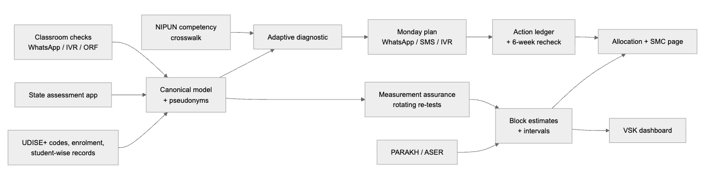

India @ 71/100 Challenge · Theme 2: Foundational Learning Outcomes · Round 1 proposal — draft v0.3 (4 Oct 2026)
Team: ⟦Team name⟧ · Team ID: ⟦Team ID⟧ · Institution(s): ⟦…⟧ · Contact: ⟦email, phone⟧
The scorecard. India scores 71/100 on the SDG India Index 2023-24 and 61 on SDG 4 (Quality Education); the adjusted net enrolment rate in elementary education is 96.5 % [1]. NIPUN Bharat (launched 5 July 2021) commits to "universal FLN in primary schools by 2026-27": every child reads with meaning at ≥ 60 words a minute and handles numbers to 9,999 by the end of Grade 3 [2]. 2026-27 is this school year.
The lived reality. In rural government schools, 23.4 % of Std III children can read a Std II-level text and 27.6 % can do at least subtraction (ASER 2024) [3]. Both rose sharply from 2022 (16.3 % and 20.2 %), so the system can move — but three in four Grade 3 children in government schools still cannot read a Grade 2 text. In private schools the reading figure is 35.5 % [3].
The measurable gap. Share of Grade 3 children in government schools who meet the Grade 3 reading and numeracy goals: mission target 100 % in 2026-27 [2]; independently measured ≈ 23 % (reading) and ≈ 28 % (subtraction) [3].
The underserved group. Children in Grades 1–3 of rural government schools — 68.9 % of India's 14.71 lakh schools are government schools [4] — and, within them, those the data system sees least well: children in 1,04,125 single-teacher schools (33.8 lakh enrolled) [4], Scheduled Tribe children — the lowest-scoring social group in PARAKH 2024 Grade 3 (maths 57 % vs 61 % for others) [7] — Scheduled Caste children, and children whose home language is not the language of instruction.
The implementation gap — five breaks. Data is not missing: UDISE+ has held student-wise records ("more than 60 fields for each student") since 2022-23 [4]; states run census-style FLN tests; Vidya Samiksha Kendras (VSKs) run dashboards. Yet the chain recorded → believed → acted on → rechecked breaks at five points:
| Break | Today | Consequence |
|---|---|---|
| Commensurability | ASER levels, PARAKH average scores and state tests use different constructs and scales; no system links them (see §2) | Teacher, block and state see different pictures |
| Trust | Census-style tests are often "proctored and graded by teachers in the same school"; Madhya Pradesh's Pratibha Parv (~6–7 million students) was shown to "mislead inferences about learning levels" [5] | Officials cannot tell progress from reporting pressure |
| Granularity | Trustworthy surveys (ASER, PARAKH) are samples | Silent about a block, a school, a child |
| Actionability | Outputs are averages and "% NIPUN" | Nobody is told which children, which skill, which activity, this week |
| Closed loop | Actions are not logged or rechecked | Nobody learns what worked |
| Evidence | Finding | Source |
|---|---|---|
| ASER 2024 (rural, household, one-on-one oral test) | Std III govt: reading Std II text 20.9 % (2018) → 16.3 % (2022) → 23.4 % (2024); subtraction 20.2 % (2022) → 27.6 % (2024) | [3] |
| Foundational Learning Study 2022 (NCERT; ~86,000 Grade 3 students, 10,000 schools, 20 languages) | Numeracy: 37 % limited, 42 % sufficient, 10 % superior skills | [6] |
| PARAKH Rashtriya Sarvekshan 2024 (21,15,022 children, 74,229 schools, 781 districts; Grade 3: 5,99,026 students) | Grade 3 average score, language / maths: rural 64 % / 60 %; ST children lowest at 61 % / 57 % vs 66 % / 61 % for others; weakest maths competencies (shapes, money) at 50 % | [7] |
| Official-data audit, Madhya Pradesh (re-test in 283 schools) | Official census scores inflated by +38.9 pp (maths) and +33.8 pp (Hindi) over independent re-test levels of 25.1 % and 37.9 %; in Andhra Pradesh, paper tests inflated by 16–20 pp, while tablet-based tests (≈ US$0.50 per test) mostly removed the distortion | [5] |
| Diagnostic feedback to teachers, Andhra Pradesh (RCT) | Reports on their pupils' results alone: no detectable learning gain | [13] |
| School-governance reform, Madhya Pradesh (RCT, 1,774 schools) | High compliance with ratings and improvement plans; learning effects null (maths +0.031 SD, Hindi +0.004 SD) | [14] |
| Teaching at the Right Level (six RCTs, seven states) | Haryana +0.15 SD (language); Uttar Pradesh learning camps +0.6–0.7 SD; scaled to "over 60 million students" | [8], [15] |
| Phone + SMS targeted instruction, Botswana (RCT) | +0.121 SD numeracy; SMS alone +0.024 SD (not significant) | [16] |
| Global Education Evidence Advisory Panel (2023) | "Targeting teaching instruction by learning level, not grade" is a Great Buy | [17] |
Our real-data check (27 states). We linked ASER 2024 and PARAKH 2024 state results. The two national instruments rank states very differently: Spearman ρ = 0.44 for reading/language and 0.26 for arithmetic/maths, with a mean rank gap of ~7 places; Rajasthan is 4th of 27 on PARAKH Grade 3 language (70 %) [22] but 23rd on ASER (12.1 % of government-school Std III children read a Std II text) [3]. Using PARAKH to predict ASER cuts out-of-sample error only from 10.5 to 9.2 points (reading) and 7.9 to 7.6 (maths). The instruments measure different things — so a crosswalk with explicit uncertainty must come before either drives decisions.
Design lesson. Reports and ratings produced compliance, not learning [13], [14]; unverified official numbers were off by over 30 points [5]; diagnosis that becomes a grouped, level-appropriate action works [8], [15], [16]. So the layer must make numbers trustworthy and end every diagnosis in an action.
| System (deployed) | What it does | What it leaves undone |
|---|---|---|
| UDISE+ [4] | School census + student-wise records since 2022-23 | No learning levels |
| VSKs (state command centres) | Command-centre dashboards: attendance, assessments | Monitoring, not a classroom action; no causal evaluation found |
| State FLN assessments + verification — Haryana Saksham Ghoshna: a block is "Saksham" if > 80 % of students score > 50 %, checked by a third-party test in all 119 blocks [10]; Gujarat Gunotsav: 3,000 senior officials assess "25% schools from all the blocks" [19]; UP: NIPUN app with external verification [20] | Census data + verification | Verification grades schools or blocks; it is not used to calibrate the data, so it must be huge |
| AI oral reading — Wadhwani AI Vaachan Samiksha, ~30,000 Gujarat schools (developer figures) [11] | Tamper-resistant fluency scores | No independent accuracy check found; no remediation plan |
| TaRL (Pratham) [8]; chatbots such as SwiftChat in 14 states (vendor figures) [12] | Assess → group → activities; delivery channels to teachers | Needs a light, recurring diagnostic and follow-up at scale |
Why the gap persists. Data pipes scaled; verified impact did not. Teacher-graded data is fragile, so states verify by brute force, and verification samples are not used as measurement. Dashboards monitor; few systems turn a diagnosis into next week's activity.
Ek Tasveer is not a new app: a thin decision layer on what states already run (UDISE+, the state assessment app, the VSK, DIKSHA, WhatsApp/SMS/IVR) that adds the five missing links through 12 components with typed, open contracts (JSON Schema) — adoptable one component at a time.

Loop 1 — the classroom, weekly. A teacher runs a few-minute oral check per child on the NIPUN-aligned ladder (letter → word → Grade 1 text → Grade 2 text; numbers → subtraction → division). An adaptive engine stops as soon as it is ≥ 90 % sure of the child's level and returns a Monday plan: TaRL groups, one activity per group from the state's own content, and the competency to recheck in four weeks — as one WhatsApp message, ≤ 3 SMS, or an IVR call in the local language. Names stay on the teacher's phone; the system holds only pseudonyms.
Loop 2 — the system, termly ("measurement assurance"). Exam boards already moderate school-assessed marks against independent evidence — e.g. NSW's NESA and Queensland's QCAA, which reviews "a selected sample" from every school [21]. We adapt that idea, plus survey back-checks and small-area estimation, to FLN census data, using the sample to calibrate, not to grade. Each term a small, rotating sample of schools — chosen by statistical uncertainty and decision value, always with a random component, so every school has a known inclusion probability — is re-tested by the cluster coordinator during the regular academic-support visit, who then coaches that group. A model-assisted estimator calibrates every school's reported results; small-area estimation with UDISE+ covariates then gives block numbers with intervals that add up to the PARAKH/ASER anchor. No school-level "trust label" is published: the aim is a true picture, not blame.
Decisions it feeds. CRC weekly visit plans; block/district allocation of remedial camps and training, ranked by expected children helped and weighted for single-teacher schools and SC/ST share; a one-page pictorial summary for each School Management Committee; interval-backed evidence for district Samagra Shiksha plans.
Governance and standards. Keys: UDISE+ school code, LGD codes, a salted pseudonym of the student ID; competency codes from the NIPUN Lakshya Soochi. Role- and purpose-bound access: child-level data only on the teacher's device; cells with < 10 children suppressed; school-level moderation data only for the moderation team. The DPDP Act 2023 requires verifiable parental consent for children's data and bars "tracking or behavioural monitoring of children" unless rules exempt a class of processing (s. 9) [18]; the design holds either way, with pseudonymised, purpose-bound server records and consent captured at enrolment where required. NIPUN asks for "IT based solutions … field level child wise monitoring" built on DIKSHA, UDISE+ and NDEAR standards [2] — this is that layer.
Working demo (real runs; synthetic children — no real child data used). A simulated district (6 blocks, ~600 government primary schools) in which ~30 % of schools inflate teacher-reported results; code, seeds and commands in the repository (eval/run_eval.py, components/*/evaluate.py).
| Result (first runs, 4 Oct 2026) | Value |
|---|---|
| Adaptive check capped at 8 of 16 items: exact level accuracy (5 levels, both subjects, seeds 101–105) | 0.551 — baseline for the auto-research loop |
| Monday plan for a class of 60, Hindi WhatsApp | 659 bytes; SMS version 3 segments; IVR script |
| Block error of "% meeting goal", teacher-reported vs moderated (10 % of schools re-tested; 5 seeds) | 4.09 ± 0.32 pp → 2.34 ± 1.09 pp |
| Detecting inflating schools (AUC) from public signals only | 0.77 |
Governance policy tests (components/governance/evaluate.py) |
36 / 36 pass |
Honest limits. In a small district (120 schools, 12 re-tested; one seed) moderation increased block error (5.4 → 7.7 pp) and intervals under-covered, so the minimum effective sample and calibrated intervals are our next targets; allocation gains are not yet shown. The 5-seed figures used the simulator's default calibration (25 % / 30 %); the ASER-calibrated re-run (23.4 % / 27.6 %) is pending.
| Phase | Scope | What happens | Exit criterion |
|---|---|---|---|
| 0 (3 months) | 1 district, 2 blocks, clusters staggered | Loop 1 in Grades 1–3; Loop 2 at a 10 % rotating sample; staggered start gives a causal comparison | Teachers use the plan weekly; moderated vs reported gap measured |
| 1 (1 year) | 1 state via its VSK | Connectors to the state assessment app and UDISE+; SMC pages; AWP&B evidence | Block estimates with intervals in the state's planning cycle |
| 2 (2–3 years) | Multi-state | Open contracts and components offered as digital public goods | Adopted component-by-component |
People and time (design estimates). Teacher: one short oral check per child per term and one message a week. CRC: at a 10 % rotating sample, a block of 100 schools needs 10 school re-tests per term — about 12 children each, inside visits the CRC already makes. Block/district: the existing monthly review uses the moderated numbers. Costs: no new devices; SMS/IVR as fallback; tablet-based re-testing was costed at about US$0.50 per test in the Andhra Pradesh study [5]. Risks → mitigations: teacher workload → short adaptive checks; language → per-language validation of items and AI scoring; connectivity → offline-first, SMS/IVR; gaming → rotation, random component, no published labels; privacy → pseudonyms, suppression, purpose limits.
Beneficiaries. Grade 1–3 children in government schools of the pilot district, then the state (counted from UDISE+ grade-wise enrolment). Outcome indicators. Share of Grade 3 children meeting the reading and numeracy goals at block level, with intervals, every term; teacher minutes per child; share of actions rechecked within six weeks; gap between reported and moderated figures. Expected effect and scale. TaRL-style grouping has strong RCT support [8]; the staggered pilot measures our effect rather than assuming it. No new hardware or app: the layer runs on the state's VSK, uses UDISE+ identifiers and speaks WhatsApp/SMS/IVR.
research/sources/)